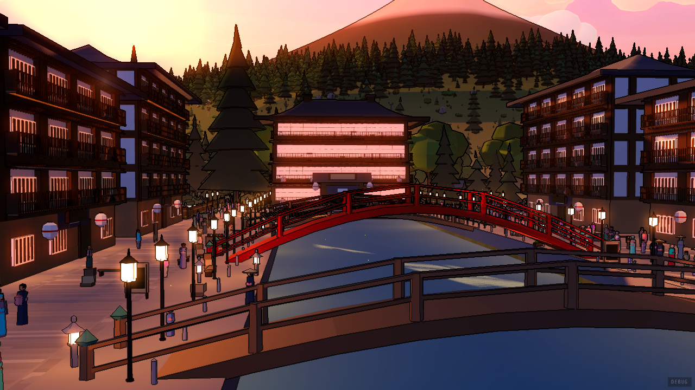

past-three.html moved the screens a session happens in onto one sheet of paper. This
card is everything that was still left in the old sepia language after that: the kanji
detail panel, conversation practice (the scenario tutor), and the two other things the tutor pop-up
holds — chat with the tutor and image translation. None of it is built. Robbie approves this card
before any of it is.
Two objects, already in the app, carry all of it. Things you consult stand on the lookup's scrim — Look it up, Every character and settings already do — so the kanji panel joins them, on Every character's own 900-wide shell. Things you do stand on the stage's sheet, the way the round, the exam and the passage do, so conversation practice gets the sheet and a place in The World. Chat and image translation are the one open question, and section EIGHT draws both answers side by side.
Every count, chip and limit below is one the code can produce today, and the note under each
plate says where it comes from. The kanji plates use the payload the bridge actually builds for
漢 and 語 (data/dictionary_repository.py, build_kanji_detail_payload, run
for this card); the conversation plates use the cafe scene's real script
(lib/scenarios/cafeOrder.ts). The only invented words are the ones a model writes — the
tutor's reply and the translation in section EIGHT — and those are labelled where they appear.
Backdrops. The scrim plates stand on valley-sunset.png, as settings does in
past-three.html. The World has no plate of its own, so the conversation stands on
valley-reading.png, the hot-spring town — the same ground
assets/screen-scenes.png shows its two scenes on.
Today a dark cassette modal titled Kanji details, a summary card, a readings grid, a compounds list and a stroke box, stacked in a scroller. Here it is Every character's sheet with the columns filled differently: the character, what it sounds like, what it is made of.
Every character's shell, not a new one. 900 × 316 at left 190, top 150, the band and the
foot from mastery.css. Sheets on the scrim are exempt from the stage's y range, and
this one is the same object Every character already hands a kanji to — so opening it from there
is a change of columns, not a change of screen.
Escape goes up one level, to wherever it was opened from. From Look it up it returns to Look it up, still holding 漢; from Every character it returns there. The old panel closed outright, which from inside Look it up threw away the query as well.
What is honest about 漢, and why it looks thin. The dictionary has one ON reading and no
KUN, and a reading's example word is the character standing alone with that reading
(_reading_examples_by_normalized_reading matches japanese = 漢), so
the example is 漢 かん, not 漢字. That is what the code gives; the KUN row says so in the
panel's own words rather than going blank.
jlpt_level: KANJIDIC's jlptLevel 3, mapped to "N3" by
build_offline_dictionary_sqlite.py:297. This is a data bug: KANJIDIC's
levels are the pre-2010 four-level test, so 3 is not N3 — the app's own deck files 漢 under Kanji N4
(the theme line beside it). Flagged for the lead; the plate shows what the code would show. Null
level = no chip.stroke_count (KANJIDIC). The panel prints "13 strokes" under the stroke box today.on_readings.length, kun_readings.length. Each reading carries at
most 2 examples (_KANJI_READING_EXAMPLE_LIMIT); one is drawn. A kanji with more readings
than the column holds folds them to "N MORE READINGS"._KANJI_COMPOUND_LIMIT,
ordered common-first, then shortest, then entry id), and has_more_compounds is true
(179 entries contain 漢). The brief asks for a bare "+ MORE"; the payload does know it holds 8 more
than are drawn, so "8 MORE, AND MORE" is also producible — the lead's call.components from domain/kanji_components.py (KRADFILE) — ships with the app.
The state Robbie actually sees. The offline dictionary is not installed, so the bridge
returns source: "deck_only": no meanings, no readings, no compounds, no stroke count.
What ships with the app is still there — the parts, the level and theme from the deck, and the
stroke-order box, whose data is bundled separately.
The readings column leaves; it does not stand there empty. Today's panel draws all five
sections and fills three of them with "Not available in the offline data." — three identical
grey sentences that read as a fault. Here readings, compounds and meanings fold into one band
under the header, in the panel's existing deckOnly words, with the one place that
fixes it, and the parts and the stroke box take the room at a larger size. Three full columns
and a stated reason is a design; three columns with holes is a bug report.
The band is the lookup's own vocabulary — assets/screen-lookup.png already
says "THE OFFLINE DICTIONARY IS NOT INSTALLED" in the same place, for the same reason.
jlpt_level "N5"
(jlpt_level_source "deck"), categories ["Kanji N5 · Study & Language"],
tags ["kanji","n5"].components ["言","口","五"] — the same three Look it up shows in screen-lookup.png.stroke_count: null in deck-only, so the box prints no count (today's
KanjiStrokeAnimation already hides it when null). The box itself loads bundled hanzi-writer data
(handwriting-data-manifest.json has 語).N4 from the deck; with the dictionary it reads
"N3" (plate ONE). The same character changes level when you install a download — the data bug noted above.
Conversation practice leaves the tutor pop-up for its own screen. You arrive from The World's
Scenes (level three, Scenes.tsx, built) having already picked the scene, so this
screen asks the one question left: how much help.

Order at a Cafe
Practice ordering a drink, choosing a size, and deciding eat-in or takeaway at a Japanese cafe.Simpler phrasing, more generous hints, slower audio, and kana/romaji reading aids.
Natural phrasing at a normal pace with lighter hints.
GRADING Responses are graded entirely by deterministic rules on this device. Anything the rules can’t place falls back to the scenario’s own recovery line.
PRIVACY Speech recognition runs locally on this device. Responses are graded with deterministic rules first; a local AI model may help judge unclear answers only if one is installed and enabled in Settings. Raw audio recordings are never saved. Transcripts are stored on this device only after you complete a scenario.
The scene in the prompt cell, the choice in the work cell. Who you will talk to and what
the scene is stand where a round's character stands; the objectives and the two levels are the
work. The level is two slips and ←→, not 1/2 — digits are contested by App.
The grading and privacy notes are both here, whole and verbatim
(evaluationDeterministicMode, privacyDisclosure), set small under the
choice they qualify. With a model installed the grading line swaps to
evaluationAiMode, which is one line longer — still inside the cell.
cafeOrder.ts and shinjukuDirections.ts (the two in screen-scenes.png).CAFE_ORDER_SCENARIO.objectives: six, required: false on
greet and thanks. The player counts metRequired / requiredObjectives.length (ScenarioPlayer.tsx:67-68).Scenes.tsx already draws per scene (screen-scenes.png).SCENARIO_LEVEL_LABELS / SCENARIO_LEVEL_DESCRIPTIONS, verbatim.The screen the scene is spent on. Today it is a chat log in a pop-up, every line a bubble, the reply box at the bottom and the hint in a floating popover. Here only the line you are answering is on the paper; the conversation behind it is one button away.
What size would you like?
HEARD “レギュラーでお願いします” Edit it if you need to, then submit.
The character's line is the specimen. Japanese large, the reading under it, and the English always shown, at every level — the critique asked about hiding it and the brief keeps current behaviour. The replay button sits in the kicker's line, where the round keeps its own speaker.
Earlier turns are a button, not a key. The reply field takes romaji, so any bare letter
is typing. The mic gets CTRL+M for the same reason — a modifier, never a letter.
That shortcut is new; today the mic is a mouse-only button.
What the mic heard lands in the field, to edit before it is sent — exactly today's behaviour, with today's words. The hint popover becomes slips on the paper: the ladder unfolds one step at a time under the field and nothing floats over anything.
metRequired / requiredObjectives.length. The brief's
"1 / 5" cannot happen: the cafe has 4 required objectives (and 6 in all); Shinjuku has 4 required of 5. Drawn as
the code counts. The greet tick is gold but not counted — it is optional.n-size-turn has 3 steps; one revealed
(revealedLevel + 1). Intermediate has 1. A ladder per line, not a budget — it resets on the next line.SCENARIO_TTS_SPEED_SCALE.beginner; intermediate is 1×.Today the correction is a line of small text inside your own chat bubble, and the next line from the barista has already arrived underneath it. Here the sheet holds the answer until you take the next line, which is the round's answered state, applied.
What would you like to order?
Understood, not quite: the barista knows what you want, and asks you again.
Your line on the rule, the outcome beside it, the correction as a vermilion slip, and the slab turns ink. The round's grammar exactly: vermilion is what you owe, ink is what comes next. A partial answer is not struck through — the barista understood it — so the rule turns vermilion and the words stay readable.
The hold is the view's, not the engine's. submitLearnerResponse has already
advanced and pushed the barista's follow-up by the time this draws
(engine.ts:271); the screen simply shows it as the next slip and waits for Enter
before making it the specimen. No change to the engine, the transcript or what is saved.
"YOU COULD ALSO SAY" is not on this plate because it cannot be. The model answer is
written onto the barista's turn when a line's attempts run out (engine.ts:298-305),
never alongside a correction. It is drawn in the strip under SIX.
n-order hits mistake-missing-please, classifyAs: 'partial'; the
correction, reading and romaji are that mistake's own. Outcomes are correct | partial | incorrect | unclear;
only partial carries a correction.engine.ts:262 requires correct).recovery.maxAttempts on n-order is 3. A partial does not spend an attempt
(only incorrect/unclear do), so this reads 1 OF 3 until a miss.explanation ("Name the drink, then add ください…") exists but today reaches the screen only in the summary, and only
if repeated twice. The line under the rule could carry it instead of the generic sentence drawn here.Today two screens — a summary that scrolls, then a separate panel of cards with four text boxes each. Here one sheet: what you met on the left, what to keep on the right.
Your progress in this session will be discarded.
leaveConfirmYour current progress will be discarded.
restartConfirmassistLabelThis session could not be saved (…), so no SRS drafts are available for it.
persistenceNoteThe summary and the card review become one sheet. The objectives are the score; the suggested cards are slips with the panel's real actions — Accept, Dismiss, and Edit on the card under the cursor (front, back, reading, notes open in place of the slip), plus Skip all. Nothing is saved until Accept, which is today's rule and is said on the sheet.
Everything else folds to a count. Vocabulary, grammar and next steps are a line, not three lists; the full transcript, today behind "Show full transcript", is the earlier-turns button from FOUR.
The confirmations are the slab, not a banner (the strip above). Leave and start over turn the slab into the question and its two answers, with the consequence on the status line above it — the panel's own sentence, split at its full stop. Escape on the question is "Keep going". The "Try saving again" slab in the last crop is new — today the note only reports the failure — and is the lead's call.
Past sessions (ScenarioHistoryPanel) are reached from The World's Scenes
and the intro's second back tab, as a sheet on the lookup's scrim — they are something you
consult, like Every character. The list, the per-session delete and Clear all keep their own
two-step confirmations ("Yes, delete" / "Keep it").
deriveScenarioSummary statuses met | assisted | missed; thanks has
maxAttempts: 1, so one miss hands over the model answer and marks it assisted.correction set — the partial コーヒー from FIVE.generateSrsDrafts on this run: srs-coffee and srs-please (n-order visited), srs-o-kudasai
(grammar on n-order), srs-missing-please (that mistake was hit). Front, reading and back are the authored strings.suggestedNextSteps has two.Every one of these is a line in today's composer or a status paragraph above it. On the sheet each is the work cell's own status line and the slab's sentence; typing stays available in every one of them, which is today's rule.
evaluatingResponsePLAYING AUDIO…
npcSpeakingListening… (max 8s)
SCENARIO_MIC_MAX_DURATION_MSRequesting microphone access…
micRequestingTranscribing…
micTranscribingMicrophone permission was denied. Enable it in your system settings, or type your response instead.
micPermissionDeniedNo microphone was found on this device. Type your response instead.
micNoDeviceSpeech recognition is unavailable in this build. Type your response instead.
sttUnavailableRecording failed. Please try again, or type your response instead.
micFailedNothing here is a new box. Each state is the status line under the reply rule, or the
slab's own sentence when the state is about the whole turn (checking with the model is the slab,
because the turn is already committed and only a second submission is blocked). Every word is
SCENARIO_COPY or the player's own string, verbatim.
Where the mic cannot work, the mic button stays and goes quiet and the field's
placeholder says "type your response"; where speech recognition is missing from the build the
button is gone entirely, which is today's canRecord rule.
Drawn as three rows of three, not one row — nine states at 1280 wide would be 142 px each, too narrow to read the sentences. "Listening…" is added to the brief's eight because it is the state the mic spends most of its time in.
SCENARIO_MIC_MAX_DURATION_MS = 8000, counted down by LearnerInputPanel.SCENARIO_AI_TIMEOUT_MS 15 s cap).
This one is Robbie's to decide. Look it up already names both tools along its foot —
A QUESTION 質問 (assistant-chat) and A SCREENSHOT 画像
(assistant-chat-ocr) — and deliberately does not answer them:
"this overlay is a lookup, not a conversation" (features/lookup/constants.ts:7-10).
The tutor pop-up that does answer them is the last cassette panel in the app.
A — fold them into Look it up, reversing that written decision: with a model running, the two dimmed routes become answerable and the tutor pop-up retires. B — one tutor sheet on the same scrim, the same shape wherever it is opened from. Each row below is the same moment in both. The tutor's reply and the translation are illustrative — a model writes them.
Both are し plus a small kana, and the small kana is the whole difference: しゃ takes や (a), しょ takes よ (o). Say the vowel before you look at the main character — your misses are all on the second glyph, which means you are reading し and guessing the rest. Try ten of each in Meaning Match with
Why do I keep mixing up しゃ and しょ?
EARLIER4 TURNS · ↑ TO READ
Both are し plus a small kana, and the small kana is the whole difference: しゃ takes や (a), しょ takes よ (o). Say the vowel before you look at the main character — your misses are all on the second glyph, which means you are reading し and guessing the rest.
Chatbot is disabled in settings.
Turn on Chat with Tutor in Settings › Assistant, or download a model in Tutor models. The first three routes answer without one.
Chatbot is disabled in settings.
Image Translation is not installed. Install it in Settings > Tutor > Image Translation.
Both live in Settings › Assistant. Look it up still answers a kanji, a word or a phrase without either.
A — one field for everything. Look it up already infers the route from what you type; a
question in English goes to A QUESTION, an image pasted or dropped goes to A SCREENSHOT. Long
replies page (1 OF 3 ↓) because nothing scrolls. The cost: it reverses the
decision written into lookup/constants.ts, the conversation history (the last 20
turns) has to live on a sheet built for one answer, and "/" — today a lookup — starts a model call
whenever the inference guesses "question".
B — the tutor keeps a door of its own, the same sheet from the titlebar, the palette, free talk and the progression map, never a stage version and a scrim version. Two tabs instead of a menu, the earlier turns folded to a count on the left. The cost: a sixth thing on the scrim, and Look it up's two named-but-dimmed routes stay a pointer to somewhere else.
Both show the no-model state in the app's own error strings. Chat is gated on
assistantChatEnabled, image translation on the OCR package being installed; the
tutor menu today hides chat entirely when it is off, which is why neither option hides it here
— a door that disappears reads as a feature the app does not have.
AssistantChatTurn.content); the page count is the view's.ASSISTANT_CHAT_USER_MEDIUM_CHAR_LIMIT — today's counter.getAssistantChatHistory(20) (useTutor.ts:207).confidence is in the OCR payload's lines
(ocr_extraction.py:132-197) but the renderer drops it today and keeps only text and
lineCount. A line below the filter is kept anyway when it is Japanese script (:181-183),
which is exactly the line worth marking.min_confidence 0.30; the slider in today's workbench sets it in 5% steps.translateAssistantChatOcrText). Per-line English
would be one model call per line — a backend change, so the plate shows what exists.ASSISTANT_CHAT_MAX_IMAGE_UPLOAD_MB; the file input's accept.
Paste and drop are new — today it is a file picker only.Every entry point that opens the tutor pop-up today, and where it lands once this card is built. Scenario entries all go to The World's Scenes at level three; the chat and image entries depend on whether Robbie picks A or B.
| ENTRY POINT | TODAY | AFTER |
|---|---|---|
Scenes, a scene pickedApp.tsx:2618-2627 | Selects the scenario and opens the pop-up on it | The conversation screen (THREE), on that scene. Escape returns to Scenes. |
Scenes, Free TalkApp.tsx:2629-2630 | Opens the pop-up on chat | A: Look it up on A QUESTION · B: the tutor sheet on CHAT |
Palette · Open TutorApp.tsx:309 | Opens the pop-up's menu | A: Look it up, empty · B: the tutor sheet on CHAT. The menu itself retires in both. |
Palette · Chat with TutorApp.tsx:310 | Pop-up on chat | A: A QUESTION · B: CHAT |
Palette · Scenario PracticeApp.tsx:311 | Pop-up on the scenario list | The World's Scenes, level three |
Palette · Image TranslationApp.tsx:312 | Pop-up on image translation | A: A SCREENSHOT · B: IMAGE TRANSLATION |
Progression map · scenariosopenProgressionNode, App.tsx:702-704 | Pop-up on scenarios | The World's Scenes, level three |
Progression map · tutorApp.tsx:705-707 | Pop-up on chat | A: A QUESTION · B: CHAT |
Titlebar tutor buttonApp.tsx:2306-2316 (:2315), AppTitlebar.tsx:434 | Toggles the pop-up's menu | A: toggles Look it up · B: toggles the tutor sheet. :2315 and the titlebar button are one entry, not two. |
Toast actionuseTutor.ts:192 | Starts a practice round (onToastNavigate, App.tsx:658-669) — never opened the pop-up |
Unchanged. TutorToast stays as it is. |
| Tutor settings | Already in app settings (TutorSettingsTab) | Unchanged — the no-model states point there. |
The mic's CTRL+M (FOUR); the view holding the answered state until Enter while the
engine has already moved on (FIVE); "Try saving again" on a failed save (SIX); paste and drop for
images (EIGHT). Each is small and each is drawn because the brief's layout needs it, but none exists
today.
Three numbers in the brief do not match the code, and the plates follow the code: the cafe's objectives are 1 / 4, not 1 / 5 (four required of six); the earlier-turns count is 4 on the size question (2 is the count at the order, used on FIVE); and image translation returns one English block for the whole image, not a translation per line.
One data bug surfaced while drawing: the dictionary build maps KANJIDIC's pre-2010 JLPT
level straight onto N-levels (build_offline_dictionary_sqlite.py:297), so 漢 reads N3
with the dictionary and N4 without it. Not this card's to fix.